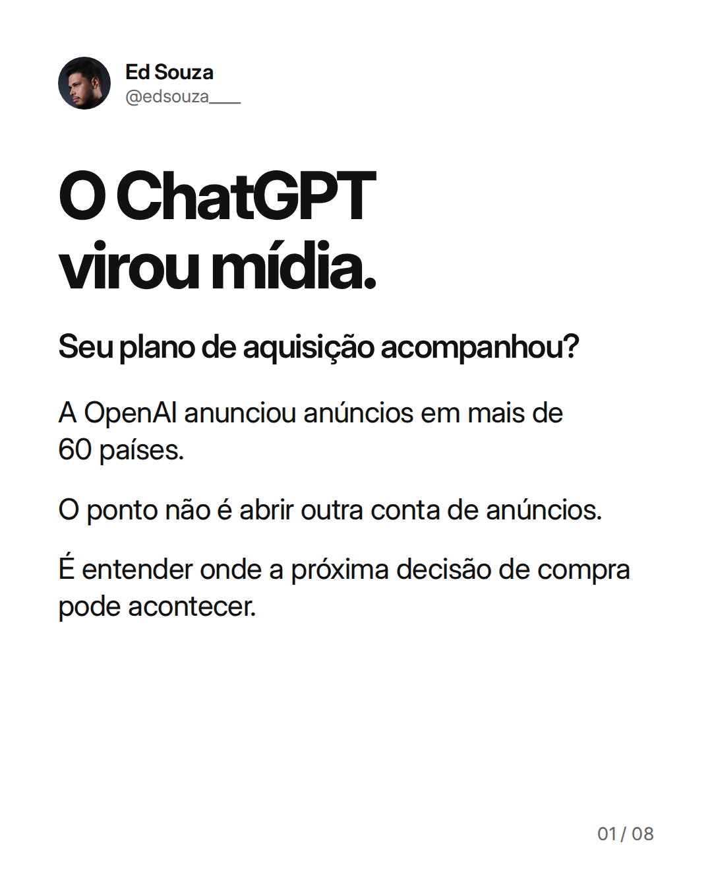

Legenda
A notícia é de 23 de setembro: a OpenAI anunciou a expansão dos anúncios do ChatGPT para sete novos mercados da Ásia e informou que o canal já está disponível em mais de 60 países. Minha leitura: a IA deixou de ser apenas uma ferramenta usada pelo marketing. Ela também está se tornando um ambiente de mídia e de avaliação de compra. Isso não prova que o canal vai superar Google ou Meta. E não justifica deslocar verba sem hipótese, rastreamento e limite de risco. Na Arquitetura de Receita, canal novo entra como teste dentro do Sistema de Aquisição. O que decide a continuidade é oportunidade qualificada, venda, CAC e margem. Você já incluiu mídia em IA no seu radar de aquisição? Te vejo no topo. Fonte: OpenAI, anúncio de 23/09/2026. Anúncios exibidos nos planos Free e Go; disponibilidade e elegibilidade devem ser verificadas para cada conta e mercado. https://openai.com/index/chatgpt-ads-expands-southeast-asia-taiwan/